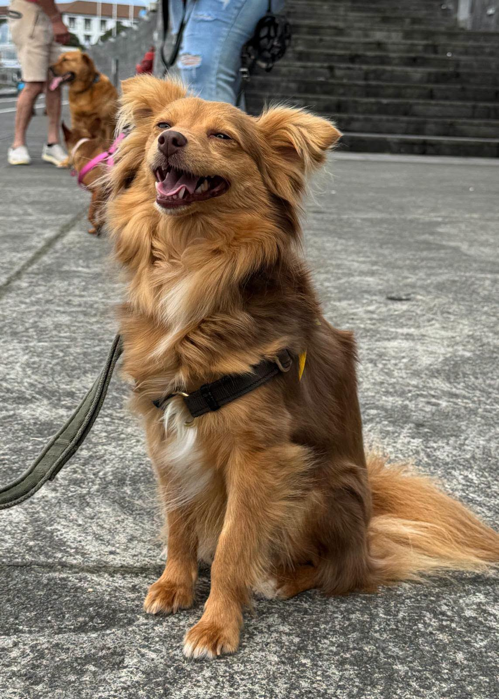
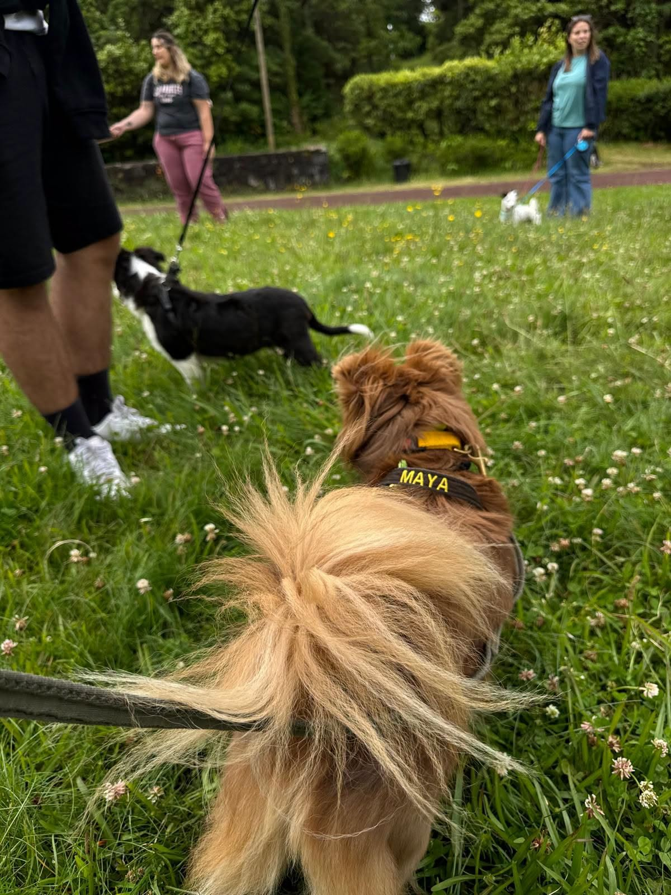
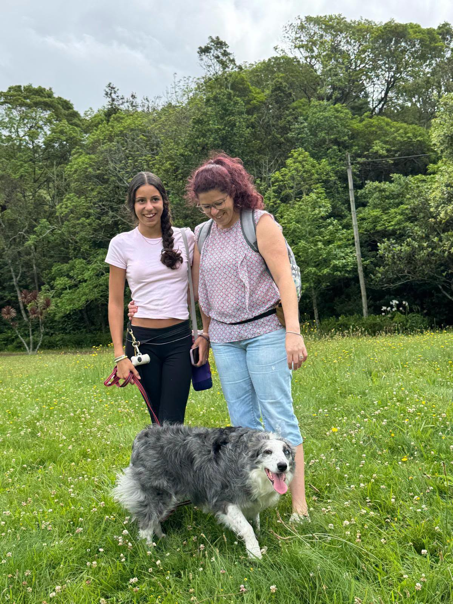
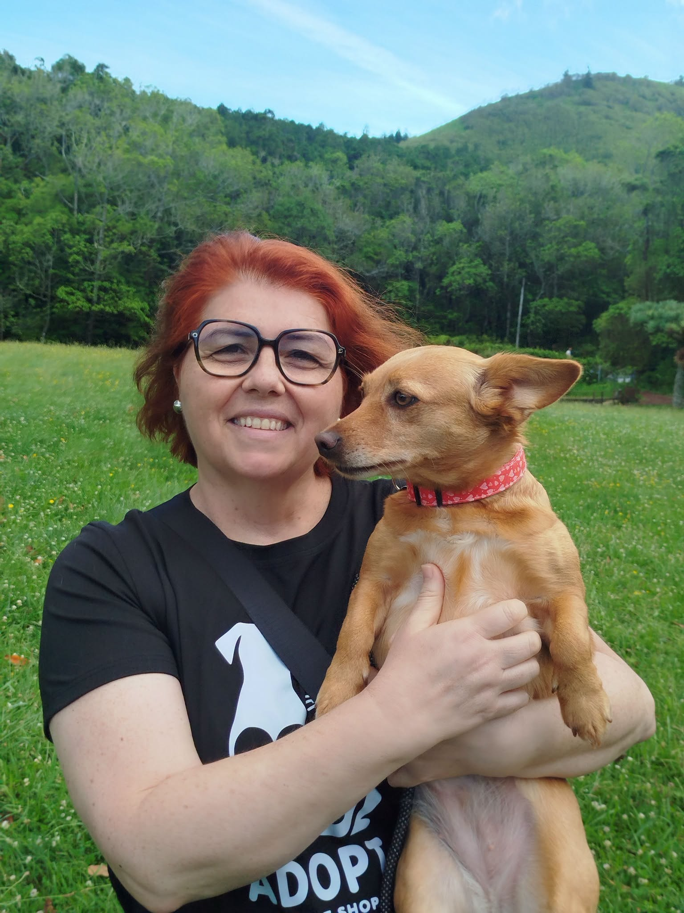
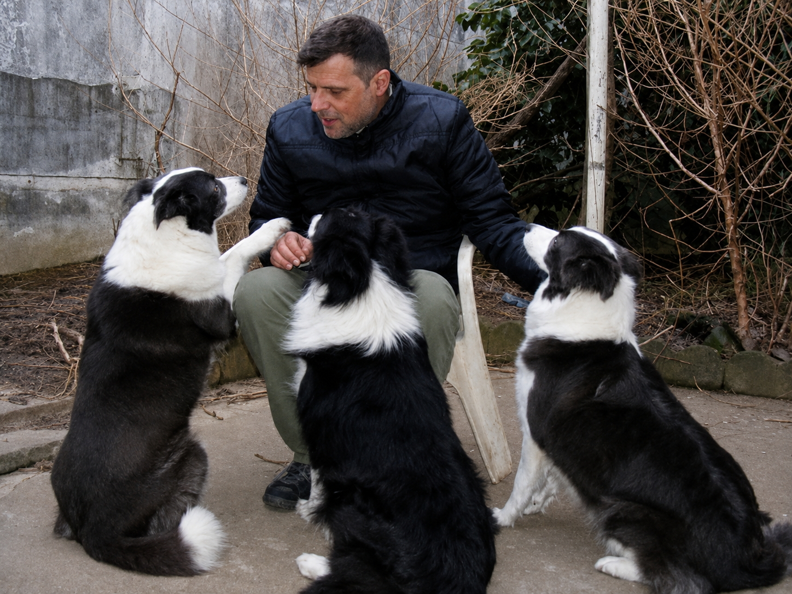

Treino Canino & Comportamento Animal · Açores
Compreender o cão é o primeiro passo para mudar o comportamento.
Treino canino, avaliação comportamental e acompanhamento personalizado desde 2003.
Desde 2003
Como posso ajudar?
Problemas reais pedem uma leitura séria antes do treino.
O trabalho começa por perceber o cão, a rotina, o ambiente e a comunicação do tutor.




Paulo Rebelo
Treino Canino desde 2003
Paulo trabalha comportamento canino com uma abordagem calma, observadora e personalizada. Antes de propor exercícios, avalia o cão, o tutor, a rotina e o contexto onde o comportamento acontece.
- Perito em Comportamento Animal
- Cinotécnico
- Psicologia Canina
- Comissário de Ringue CPC
- Comunicação Animal
Serviços
Acompanhamento adaptado ao cão, ao tutor e ao problema.
Método
Cada cão é diferente. O treino também deve ser.
O processo considera comportamento, ambiente, rotina, historial, comunicação do tutor e objetivos possíveis antes de criar um plano de treino.
AvaliarCompreenderComunicarTreinarAcompanhar
Como funciona
Um processo simples, sem atalhos.
Contacto
O tutor explica a situação e os objetivos.
Avaliação
Paulo observa cão, tutor, contexto e rotina.
Plano
É definida uma abordagem personalizada.
Acompanhamento
O treino evolui com orientação e ajustes.
Treino na prática
Momentos reais de avaliação, passeio e treino.
100% recomendado no Facebook
O que dizem os tutores
Eventos
Próximos eventos e caminhadas abertas a inscrição.
O comportamento do seu cão está a tornar o dia a dia mais difícil?
Começamos por perceber o que está realmente a acontecer.